Code, projects, and news from the DeepThink Lab.
github.com/deepthink-umich
Code released with our publications.
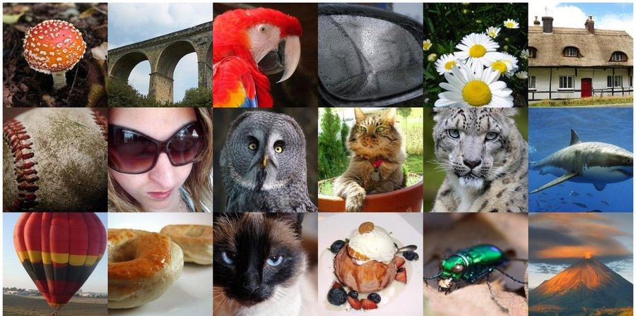
Self-guided weak-to-strong diffusion models via target extrapolation.
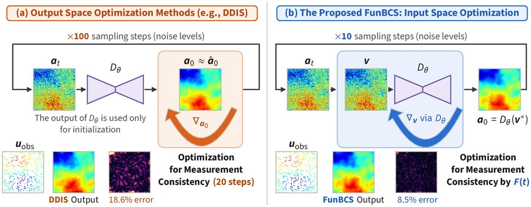
Backward-consistent diffusion sampling for sparsely observed PDE inverse problems.
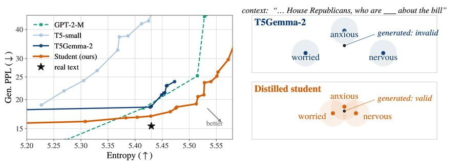
Scaling and distilling text embeddings for better diffusibility.
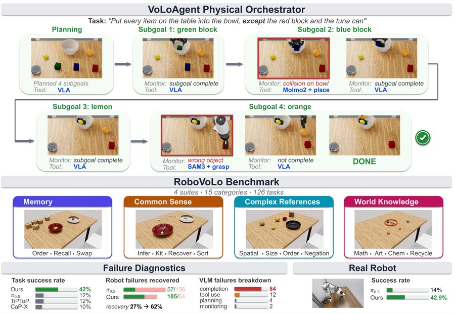
A physical orchestrator for open-vocabulary long-horizon manipulation.
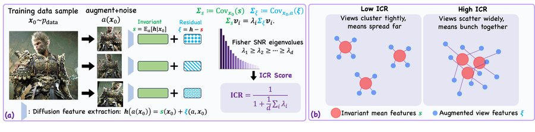
Assessing the representation space of diffusion models via self-supervised principles.
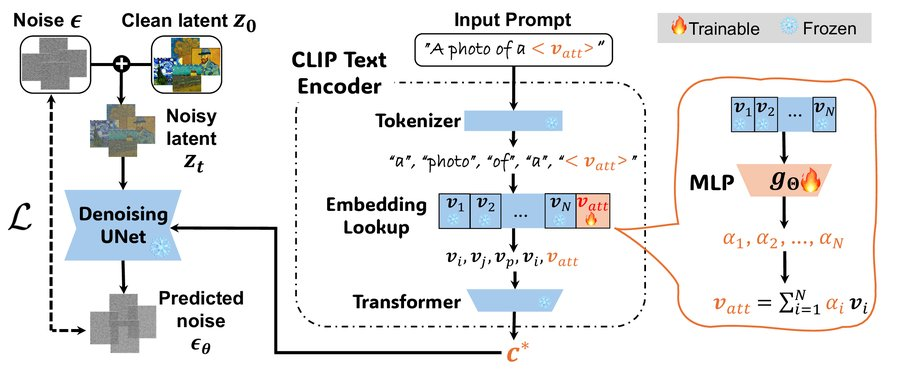
Jailbreaking attacks and defenses for unlearned diffusion models.
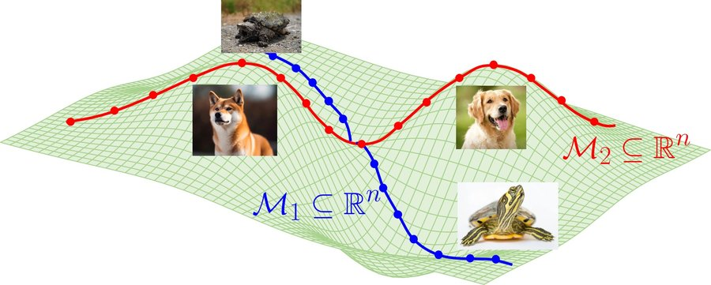
Diffusion models efficiently learn low-dimensional distributions.
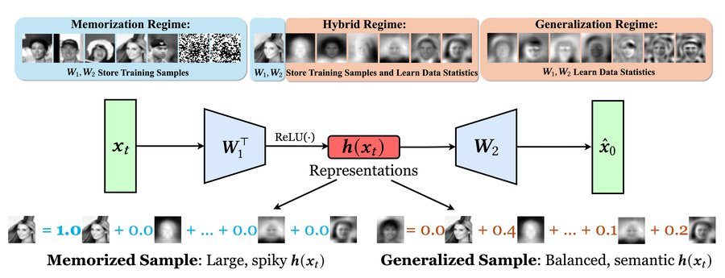
How generalization of diffusion models arises from balanced representations.
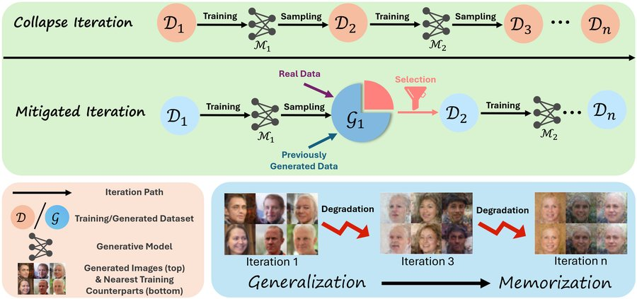
Model collapse from a generalization-to-memorization perspective.
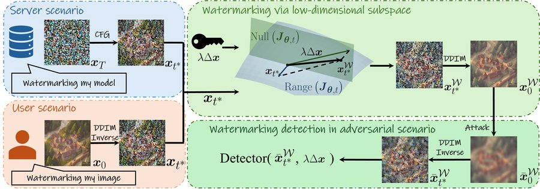
Robust, invisible watermarking through low-dimensional subspaces.
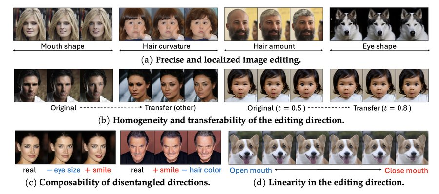
Controllable image editing via low-dimensional subspaces in diffusion models.
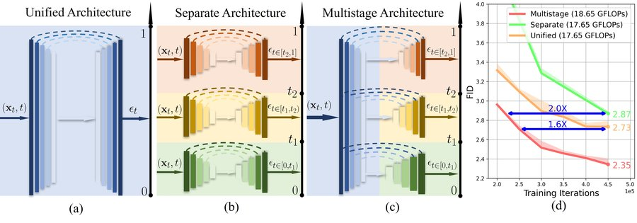
Efficient diffusion models with tailored multi-decoder architectures.
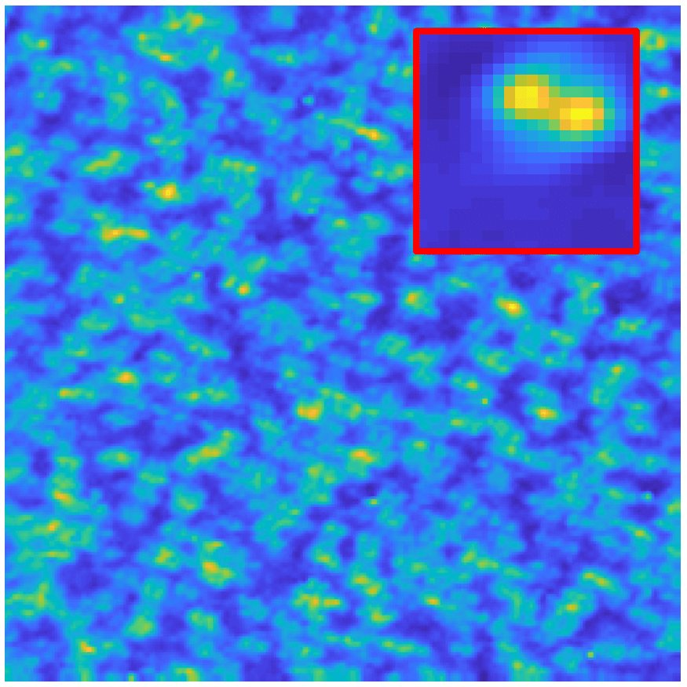
A geometric approach to short-and-sparse blind deconvolution.
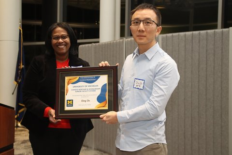